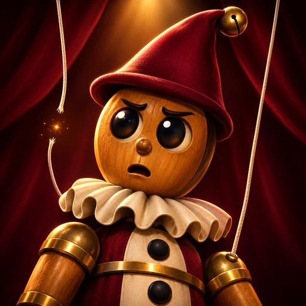
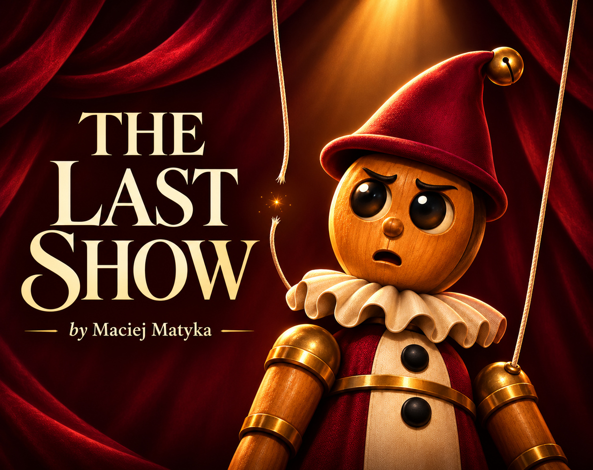
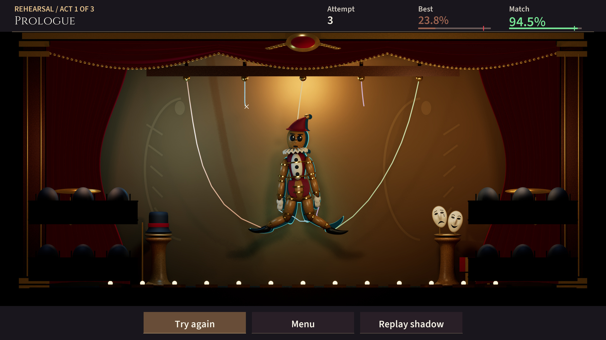
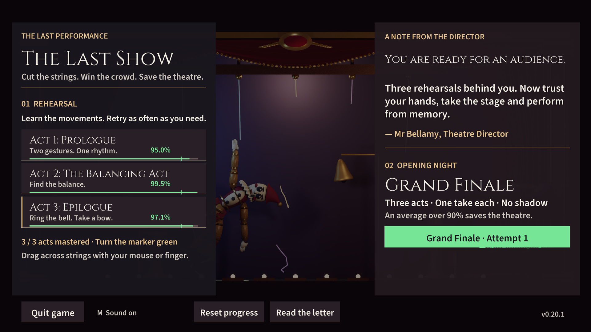
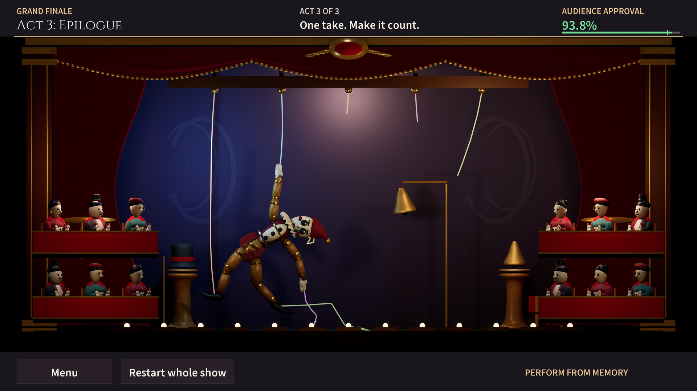
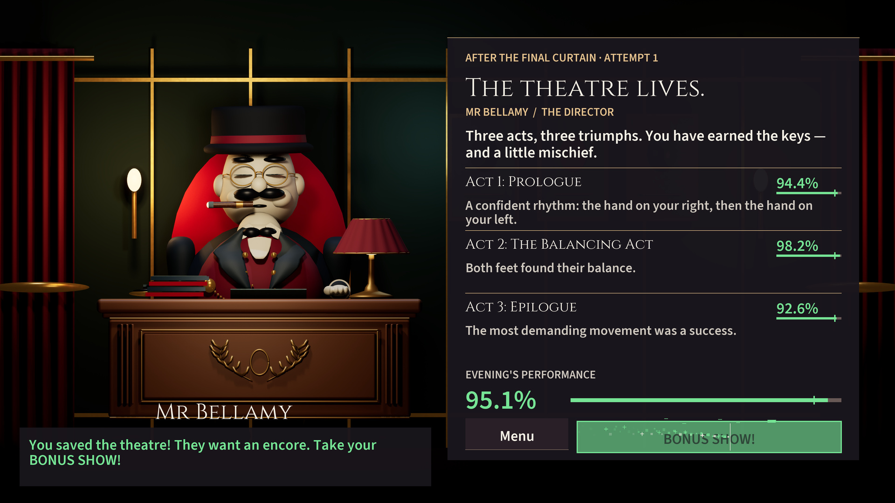

Cut the strings. Win the crowd. Save the theatre.
by Maciej Matyka
Unreal Engine 5.8.4 · Windows & Android · v0.21.0 RC2

Watch a shadow performance, then cut the marionette's strings to reproduce its motion. Your first cut starts the take. Master three rehearsals, earn the mask, and face a live audience without a shadow. An average strictly above 90% saves the theatre.
The approved trailer uses real Unreal gameplay, captured with automated input. Its physical outcomes are real: approximately 24%, then 95%. Cropping, cursor visualization, titles and licensed audio are editorial additions.
Download the approved 1080p60 trailer
“Prepare the final version for contest publication: the main game, a mobile version with a good icon, and a Glass Box documentation link. Make sure everything works, and bring it to the point where I perform the final submission.”*
Maciej chose the scope. Codex prepared an English-only contest configuration, a new launcher icon, versioned Windows and Android packages, credits, checksums and this release addendum. The physics, cut rules, scoring, story and threshold remain unchanged from v0.20.1. Earlier versions remain preserved.
*Translated excerpt; the original prompt was written in Polish. The original is retained in the private production archive. This addendum covers final preparation on 14 November 2026; the illustrated booklet and its full-chat links remain their clearly dated historical snapshot.
Limits: this RC2 was not tested on a physical phone. Emulator results do not establish Redmi 13 frame rate or universal device compatibility. Automated and synthetic progression fixtures are identified separately from real physics. No new independent subjective audio review is claimed.

The launcher icon and promotional cover were generated with OpenAI's built-in ImageGen tool, using the actual wooden game puppet as a design reference. The tool did not expose a model identifier.
These are promotional illustrations, not screenshots. The screenshots below are actual game captures, reduced in resolution without repainting.




The jam build remains frozen while future development can continue separately. The game and this project documentation belong to Maciej Matyka; third-party materials retain their own rights. The source repository remains private because it contains licensed raw assets, engine-derived code and production records.
The demo is non-commercial. Music and selected effects come from WeLoveIndies / BOOM Library / Dynamedion under the project's FREE & DEMO license; the required provider intro is present in the game. Commercial release will require appropriate licensing or replacement audio. Fonts: Cinzel and Source Sans 3, SIL OFL.
Official jam rules and FAQ · Audio license terms · Unreal EULA